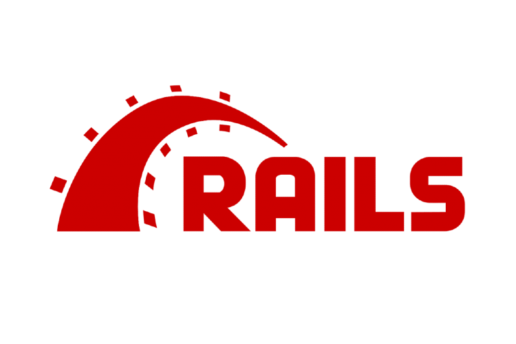
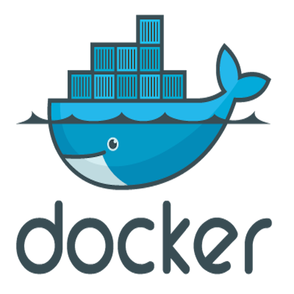
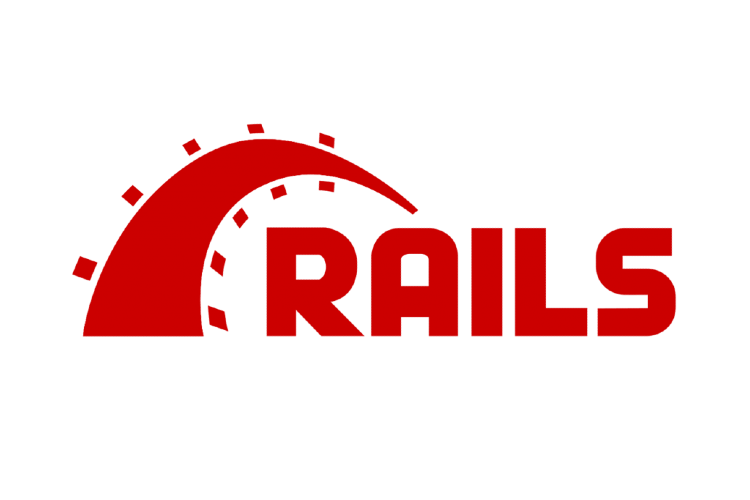
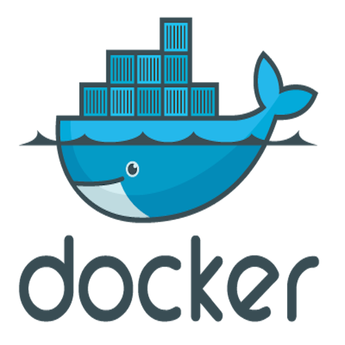
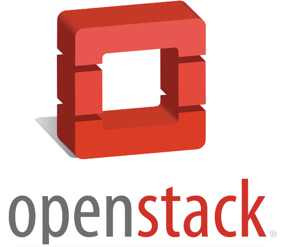
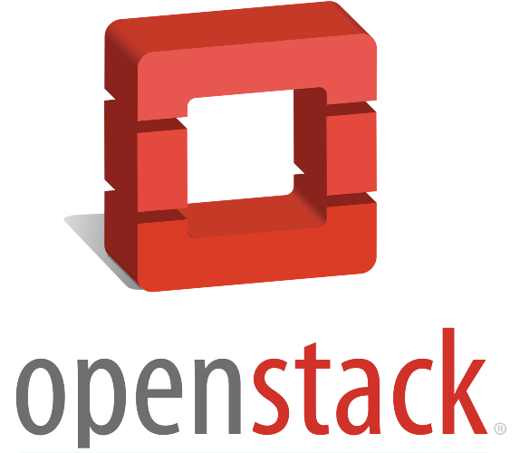

Andressa Machado
Software Developer
Core Technologies

 





Others


 



Work Experience
Software Tester
Nokia - Nokia Software Division
09/2021 - 06/2022
- Designed and implemented automated tests for the network management system using JavaScript;
- Performed manual testing of the network management functions for the deployment of working functionalities to production;
- Deployed the product into containers, using the microservice architectural design, for manual testing;
- Worked with Docker containers, Kubernetes for orchestration, Vagrant for managing virtual machine environments, OpenStack, Kafka for event Streaming, Network Concepts, etc.
Software Developer Intern
Nokia - Nokia Software Division
01/2021 - 09/2021
- Refactored, developed, and tested new features for the NetGuard family of Security products using Java;
- Refactored a 10+ years old project with new code standards and new Java technologies;
- Implemented new methods to improve RESTful project capabilities;
- Worked with Java, Spring Framework, Jenkins, RedHat, Jira, Confluence, Git, GitLab, and Vagrant for reproducible, and portable development environments.
Education and Training
Algonquin College
Computer Engineering Technology - Computing Science
Advanced Diploma
- Received an outstanding conclusion certificate for Network Programming course
- Graduated with honours
BrainStation Digital Skills Training
Web Development Course
Certificate
LinkedIn Learning Certificates:
A list of all my certificates can be found on my LinkedIn page.
Personal Projects
Scheduled Tweets
Developed in my free time with the goal of learning Ruby on Rails. Web application to allow users to connect their Twitter accounts, using Twitter API, and schedule tweets to be posted in a specific account at the desired time. Tweets can be edited or deleted before being posted.
- Login with session cookies;
- Handling passwords with Action Mailer. Edit, Forgot and Reset (Token Mailer);
- Background Job for Posting Tweets (Sidekiq);
- Scheduled Tweets
- GitHub Repository
Song Lyrics Search Android App
Developed in my free time with the goal of learning about mobile applications. When the user searches for a song, it shows the lyrics retrieved from the API and saves it to the local database.
- SharedPreferences saves data from user to be reloaded next time the app is launched;
- SQLiteDatabase used to save songs previously searched;
- Fragments used to adapt the app to tablets and bigger screens.
- GitHub Repository
Word Search Game Android App
Developed in my free time as an internship challenge. Randomized 10 x 10 grid where the words are placed for the user to find the words by swiping over them.
- Randomizes where the words are placed;
- Randomizes letters in the grid every time a new game starts;
- Adapted to landscape and portrait mode;
- Swiping movement implemented;
- GitHub Repository
[ WIP ] - Online Coffee Shop
Developing in my free time an e-commence platform with the goal of learning deepest concepts such as more complex databases, joint tables, multiple user roles, advanced Rails features, etc.